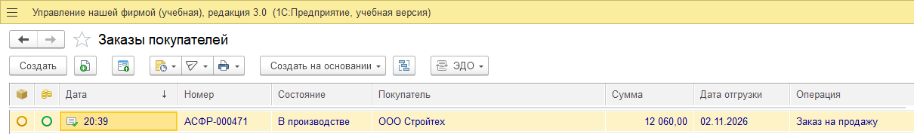
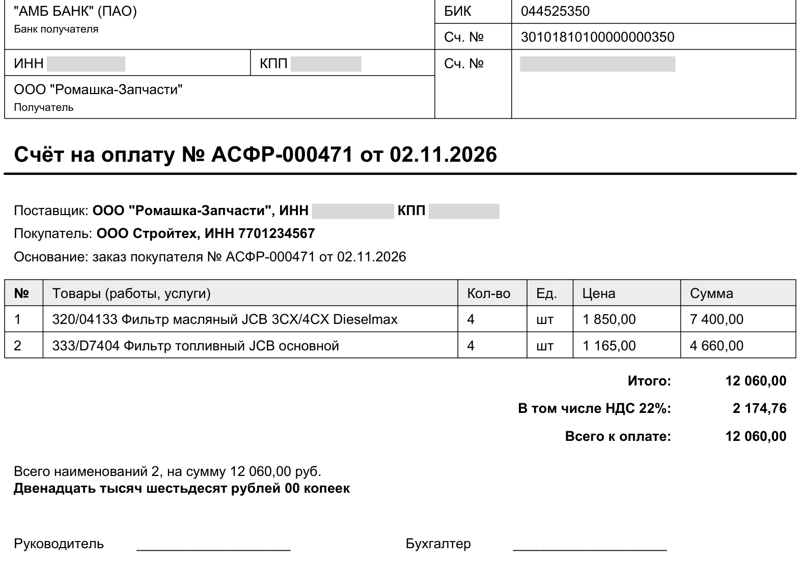
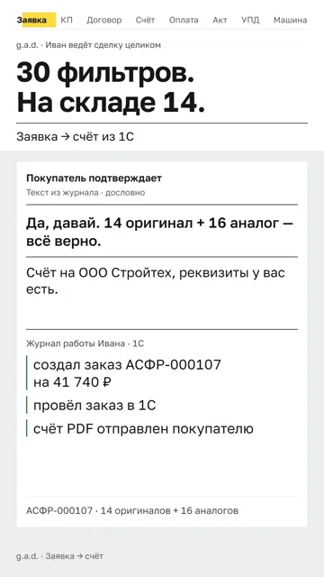
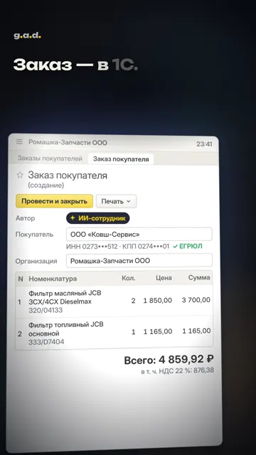
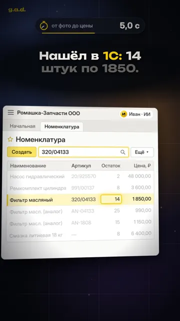

ИИ-менеджер по продажам в вашей 1С
Ведёт сделку в вашей 1С целиком
От заявки до оплаты и документов: отвечает покупателю с ценами и остатками, проводит заказ, выставляет счёт, отвечает про долг. Оплата по выписке и документы — в пилоте. Каждое сообщение проверяет ваш менеджер.
Вместо оператора 1С — около 70 000 ₽ на руки в месяц. Не коробка: настраиваем под вашу базу.
Напишите, какая у вас 1С, — пришлём обработку: одна кнопка выгрузит товары, цены, остатки и покупателей-организации, без контактов людей. До передачи файла подпишем соглашение о конфиденциальности. Покажем Ивана на этих данных и назовём цену; для типовой УНФ или УТ 11 — обычно за 2 рабочих дня. Не хотите сами — дайте доступ на 5 минут, при вас: откроем только обработку. Можно начать с одной заявки — счёт-образец пришлём в тот же день.
Или напишите Ивану как покупатель в Telegram — он на учебном прайсе запчастей и отвечает днём.
Заявка покупателя Ольга, снабжение ООО «Стройтех»
Выставьте счёт: фильтр масляный 320/04133 — 4 шт, фильтр топливный 333/D7404 — 4 шт. Оплатим сегодня.
Ответ с ценойчерез 47 с 320/04133 — 4 × 1 850 ₽ = 7 400 ₽ 333/D7404 — 4 × 1 165 ₽ = 4 660 ₽ Итого 12 060 ₽, в т. ч. НДС 22 % — 2 174,76 ₽. Оплата сегодня — отгрузим завтра.
PDFСчёт АСФР-000471.pdf
Заказ проведён в 1САСФР-000471 
Счёт PDF по заказучерез 41 с 
Напоминание об оплатев пилоте Счёт не оплачен в срок — Иван пишет покупателю по вашим правилам: когда, кому и сколько раз, без выходных и ночи.
Долг и акт сверкидолг — проверено, акт PDF — в пилоте Покупатель спрашивает «сколько мы должны?» — Иван отвечает по данным вашей 1С. Акт сверки собирает по тем же данным, отправку PDF включаем в пилоте.

- Первые три компании
- Подключение типовой УНФ, УТ 11 или КА и 2 недели — бесплатно; доработки базы оценим до договора. Иван готовит ответы и счета, ваш менеджер проверяет и отправляет.
- Оставляете
- Ориентир от 9 900 ₽/мес, точная цена — после разбора вашей базы, она зависит от числа заявок, сложности базы и работы, которую берёт Иван. Её пишем в договоре. Второй канал, например почта, +2 900 ₽/мес.
- Не подошло
- Ничего не платите.
- После первых трёх
- Подключение от 14 900 ₽, Иван от 9 900 ₽/мес — итог после разбора базы. Все цены
Артур Смирнов, g.a.d.Договор — с самозанятым исполнителем, реквизиты в договоре; на каждую оплату — чек «Мой налог».В октябре — 10+ оплаченных работ с 1С и маркетплейсами для оптовиков и магазинов: УНФ, Розница, Честный знак, InSales, WB/Ozon.
Как это выглядит
Ролики по нашим прогонам на учебной базе запчастей: чат с покупателем, 1С, счёт.

30 фильтров, на складе 14 — счёт на все 30: оригинал и аналог31 с · YouTube
Полночь, менеджеры спят — заказ в 1С и счёт за минуту33 с · YouTube
Прислали только фото детали — цена из 1С и аналог30 с · YouTube- Покупатель в ярости — проверил в 1С, скидку отдал руководителю32 с · YouTube
1.Как ведёт сделку
Не выгрузка и не чат-бот: выгрузка отдаёт данные, а Иван делает работу менеджера — от ответа покупателю до оплаты. Решение об отправке остаётся у вашего менеджера.
| Шаг по заявке | Сейчас вручную | С Иваном | Что было в прогонах на стенде |
|---|---|---|---|
| Разобрать заявку и список товаров | менеджер | Иван | Две позиции из текста заявки: 320/04133 — 4 шт, 333/D7404 — 4 шт. |
| Найти цены и остатки в 1С | менеджер | Иван | Цены из 1С: 1 850,00 и 1 165,00 ₽. Покупатель — ООО Стройтех, ИНН 7701234567 (заранее привязан к чату). |
| Подготовить заказ и счёт PDF | менеджер | Иван | Заказ покупателя АСФР-000471 — проведён. Счёт PDF на 12 060,00 ₽, в т. ч. НДС 22 % — 2 174,76. Через 41 с. |
| Проверить и отправить покупателю | менеджер | ваш менеджер | Ответ со счётом готов через 47 с — его текст на первом экране. |
| Ответить про долг | менеджер или бухгалтер | Иван | По данным 1С — проверено на нашем стенде. Акт сверки PDF и напоминания об оплате — в пилоте. |
| Найти деталь по фото | менеджер | Иван | Покупатель прислал фото детали — Иван нашёл позицию в 1С: «есть, 14 шт по 1 850», и аналог из остатков по 990. Прогон 30.10. |
| Не хватает на складе | менеджер | Иван | Оригинала 14 шт — остальные 16 предложил аналогом из остатков 1С, счёт АСФР-000107 на 41 740 ₽. Прогон 31.10. |
| Скидка сверх лимита | менеджер или руководитель | Иван → вам | Просили 10 % при лимите 5 % — лишнего не пообещал, прислал вам на решение кнопками, счёт выставил на 5 %. Прогон 28.10; передача руководителю — и 02.11. |
| Претензия покупателя | менеджер | Иван | Требовали 20 % за простой — сверил заказ и оплату в 1С, лишнего не обещал, вам — сводка с фактами. Прогоны 31.10 и 02.11. |
| Что заказать у поставщиков | руководитель | Иван, утром | Сводка руководителю по остаткам и спросу: на 03.11 — заказать у 3 поставщиков на 53 540 ₽. Сам заказ поставщику — в пилоте. |
Заказ и счёт показаны на учебной базе. Срок на первом экране — ориентир для типовой заявки; время и точность на вашем потоке проверим в тесте. Клиентских кейсов пока нет.
Что ещё подключаем в пилоте
В пилоте — при пробном запуске у вас — подключаем шаги после счёта по одному и по вашим правилам. Сейчас на нашем стенде они не проверены.
| Что делает Иван | Как | Статус |
|---|---|---|
| Напоминания об оплате | Пишет покупателю по неоплаченному счёту: срок, часы и число напоминаний — ваши | в пилоте |
| Акт сверки PDF | Собирает по данным 1С и присылает покупателю по запросу | в пилоте |
| КП | Готовит коммерческое предложение по вашим ценам и скидкам; скидку выше лимита уже сейчас присылает вам на решение | в пилоте |
| Договор поставки | Заполняет ваш шаблон договора данными покупателя из 1С | в пилоте |
| УПД и ЭДО | Готовит УПД по отгрузке и отправляет через Диадок или СБИС после подтверждения менеджера | в пилоте |
| Формирование машин | Собирает оплаченные заказы в рейсы по адресам и весу | в пилоте |
| Сверка оплат из выписки | Разносит оплаты из выписки банка по заказам в 1С; спорные платежи — человеку | в пилоте |
| Заказ поставщику | Когда остатка не хватает — готовит заказ поставщику на согласование | в пилоте |
2.Вместо чего
С чем обычно сравнивают: нанять ещё одного человека, выгрузку или загрузку заказа из письма, чат-бота. Выгрузка и расширение отдают данные — Иван делает работу менеджера.
| Как решают сейчас | Сколько стоит | Что остаётся на вас |
|---|---|---|
| Нанять оператора 1С или помощника менеджера | около 70 000 ₽ на руки в месяц (медиана), с налогами — около 100 000 ₽ | Найм и обучение. Один человек — одна заявка за раз, остальные ждут. |
| Менеджеры выписывают сами | их время: 20 счетов в день × 12 мин × 22 дня ≈ 88 ч (пример) | Пока менеджер ищет позиции и печатает счёт, он не продаёт. Посчитать со своими цифрами |
| Выгрузка цен и остатков на сайт, в прайс или мессенджер | обычно уже есть | Покупатель видит цифры, а ответить, провести заказ, выставить счёт и дожать оплату — по-прежнему менеджер. |
| Загрузка заказа из письма | от 3 000 ₽/мес и установка | Заказ заполняется сам, а счёт и ответ покупателю — менеджер. |
| Чат-бот на сайт или в мессенджер | 3 000–13 000 ₽/мес | Без подключения к 1С отвечает по загруженным материалам; работа с вашей базой, заказом и счётом зависит от интеграции. Сравнить решения по функциям |
| ИИ-агент с подключением к 1С | 6 790–12 790 ₽ на 1 000 обращений в месяц, плюс специалист 1С на подключение | Для подключения нужен специалист 1С, стоимость его работы в тарифе не указана. Сравнение |
| Иван, g.a.d. | от 9 900 ₽/мес, итог — после разбора вашей базы; подключение первым трём бесплатно, дальше от 14 900 ₽. Все цены | Проверить ответ со счётом и нажать «Отправить». Подключение к 1С делаем мы; от вашего администратора — доступ к копии базы и согласие на расширение. |
Зарплаты — 40 вакансий «оператор 1С», «помощник менеджера» с выпиской счетов по заявкам на hh.ru и zarplata.ru, опубликованных 3 октября — 2 ноября 2026; медиана — по 31 вакансии с зарплатой на руки. Цены сервисов — по их открытым страницам на 1–2 ноября 2026.
3.Что проверено
Это наши испытания на учебной базе, а не результаты клиентов. В ответах остаются ошибки, поэтому менеджер проверяет счёт и письмо перед отправкой.
| Проверка | Результат |
|---|---|
| Живой прогон, 2 ноября, 20:39, учебная 1С:УНФ, версия, которая сейчас в учебном демо в Telegram | Заявка на две позиции → заказ АСФР-000471 проведён, счёт PDF через 41 с, ответ покупателю через 47 с |
| Испытание версии от 2 ноября, 40 учебных переписок с разными покупателями | 32 из 40 переписок прошли проверку. Найденные ошибки — обещания сверх правил; в текущей версии исправлены; результат повторного испытания опубликуем здесь |
| Попытки обмануть Ивана | 55 попыток: 53 отбиты, две оставшиеся закрываем до запуска у клиента |
Проверку проходит переписка без ошибок по существу — в ценах, остатках, суммах и обещаниях; замечания к тону не учитываются.
Персональные данные — меткамиТелефоны, почты, ИНН физлиц и ИП, ФИО с отчеством заменяем метками до передачи в языковую модель. Названия фирм, товары, цены и суммы модель видит — без них счёт не собрать. Какая модель и где хранятся переписка и заказы — прописываем в договоре до запуска.
Базу 1С в интернет не открываемНужен только исходящий HTTPS, входящий доступ к базе не нужен.
4.Какая 1С и какие каналы
| Конфигурация | Что сейчас |
|---|---|
| 1С:УНФ | заказ в 1С и счёт PDF по нему проверены на учебной базе |
| 1С:УТ 11, КА, ERP | цены, остатки и ответы проверены на демо-базе УТ 11.5; заказ и счёт включаем при подключении, после проверки на копии вашей базы |
| 1С:Фреш | ещё не подключались — первое подключение делаем с вами как проект |
| Канал | Что сейчас |
|---|---|
| Telegram, Telegram Business | работает — можно написать Ивану как покупатель. Демо отвечает днём, в рабочее время; напишите, например: «счёт на 10 шт 32/925994» |
| Почта | канал написан, первый живой прогон — на вашем ящике при подключении |
| Звонки | Иван не принимает — только письменные заявки |
| MAX, Авито, ВКонтакте | подключаем под вас |
| WhatsApp, чат на вашем сайте | подключаем под вас, срок — при обсуждении |
5.Как начать и сколько стоит
- Выгрузка из вашей базыПришлём обработку для 1С: одна кнопка выгружает товары, цены, остатки и покупателей-организации, контакты людей не выгружаются. Не хотите сами — дайте доступ на 5 минут, при вас: откроем только обработку, постоянный доступ не нужен. Соглашение о конфиденциальности — до передачи файла. По файлу показываем Ивана на ваших данных — типовую УНФ или УТ 11 обычно за 2 рабочих дня, доработанную — в срок по базе, — и называем итоговую цену. Без выгрузки — перешлите одну заявку, счёт-образец пришлём в тот же день. Для подробной проверки — бесплатный тест на 20 прошлых переписках, пример отчёта.
- ДоговорУсловия проверки, ответственность и поручение на обработку персональных данных — до запуска.
- Подключаем 1С и каналНастраиваем Ивана под ваши процессы и роли на копии базы, потом включаем на рабочей. Срок подключения на рабочей базе — после согласования, где обрабатываются данные. Канал — тот, откуда приходят заявки.
- Две недели под контролемИван готовит ответы и счета на ваших заявках. Каждый ответ и счёт уходит только после кнопки «Отправить» у менеджера в Telegram. Считаем ошибки и время.
- Решаете, оставлять лиПодключение и две недели проверки для первых трёх — бесплатно, за них не платят и те, кто остаётся. Оставляете — с третьей недели по цене, названной после разбора базы (ориентир от 9 900 ₽/мес), её пишем в договоре. Не подошло — ничего не платите. Взамен просим разрешение на кейс с цифрами — что показать, согласуем с вами.
| Что | Сколько | Условия |
|---|---|---|
| Показ Ивана на ваших данных | бесплатно | По выгрузке нашей обработкой: товары, цены, остатки, покупатели-организации; итоговая цена. Соглашение о конфиденциальности — до передачи файла. |
| Проба на вашей заявке | бесплатно | В тот же день — ответ Ивана и счёт-образец по вашим ценам. |
| Подключение типовой 1С:УНФ, УТ 11, КА 2 | первым трём бесплатно, дальше 14 900 ₽ | Разово: копия базы, проверка, один канал, неделя правок ответов. |
| Подключение доработанной базы, ERP | от 24 900 ₽ | По оценке после копии базы. Первым трём типовая часть — бесплатно, доработка — по оценке. |
| Подключение 1С:Фреш и облаков без внешнего доступа | от 39 900 ₽ | По оценке после пробного доступа; не встало на копии — вернём деньги. Первым трём, кто платит месяц вперёд, — бесплатно. |
| Две недели работы после подключения | первым трём бесплатно | Менеджер проверяет и отправляет. Не подошло — расходимся без оплаты. |
| Иван | ориентир от 9 900 ₽/мес | Точная цена — после разбора вашей базы, она зависит от числа заявок, сложности базы и работы, которую берёт Иван. |
| Второй и следующий канал | +2 900 ₽/мес за канал | Первый канал входит в цену. |
| Оплатить первый месяц сразу | цена месяца, от 9 900 ₽ | Подключаем вне очереди — одновременно ведём не больше двух подключений. Не подошло — вернём 100 % в течение 14 дней. |
Цену Ивана называем после разбора вашей базы и пишем в договоре; 9 900 ₽/мес — ориентир для типовой базы и одного канала.
Что входит в ориентир 9 900 ₽Иван отвечает покупателям в одном канале: цены и остатки из вашей 1С, вопросы по доставке и оплате. В 1С:УНФ проводит заказ и собирает счёт PDF. Менеджер проверяет и нажимает «Отправить». Журнал всех ответов, правки ответов по вашей просьбе в течение рабочего дня.
1С:УТ, КА и ERPСейчас — ответы с ценами и остатками из вашей базы. Заказ и счёт включаем после проверки на копии вашей базы.
Почта: artur@gad-production.ru · Telegram: @smirnovarturr. Отвечаю сам.
6.Сколько времени уходит на счета
Считаем ручную выписку за 22 рабочих дня. Цифры по умолчанию — пример, вводите свои.
7.Для программиста 1С
РасширениеОсновную конфигурацию не меняет и с поддержки не снимает. Совместимость с вашей версией и доработками проверяем на копии базы до запуска. Счёт PDF — по обычной форме счёта на оплату по данным проведённого заказа; печатную форму вашей базы этот сценарий пока не вызывает.
СвязьНужен исходящий HTTPS. Входящих портов и публикации базы в интернете не нужно.
Тип базыКлиент-серверная — круглосуточно. Файловая — пока открыт хотя бы один сеанс 1С.
ПодгонкаПод доработки конкретной базы — по оценке после копии; подключение доработанной базы — от 24 900 ₽, цены.
Проведение заказаКнопка «Отправить» подтверждает отправку ответа, а не проведение заказа. Какие записи и проведение разрешены Ивану в рабочей базе, согласуем до запуска.
8.Вопросы
Безопасно пускать его в нашу 1С?
Он работает через расширение: основную конфигурацию не меняет и с поддержки не снимает. Базу в интернет не открываем — нужен только исходящий HTTPS. Совместимость с вашей версией и доработками проверяем на копии до запуска, а в первые недели каждый ответ и счёт проверяет ваш менеджер.
Что будет, если он ошибётся?
Иван сверяет числа с 1С, а при создании заказа передаёт ожидаемые цены и сумму — расхождение видно до записи. Это не отменяет ошибок в тексте, поэтому в первые недели все ответы и счета проверяет ваш менеджер. Спорные цены, скидки и оплаты решает человек. Не подошло — останавливаем без оплаты.
Покупатель просит скидку — что сделает Иван?
В пределах ваших правил даёт сам. Больше — присылает руководителю в Telegram на решение кнопками и покупателю сверх лимита ничего не обещает. На учебной базе: покупатель просил 10 % при разрешённых 5 % — Иван передал решение руководителю, счёт выставил на 5 %. Перевыставление по решению руководителя — в пилоте.
Какая 1С подходит?
1С:УНФ — заказ в 1С и счёт PDF по нему проверены на нашем стенде. 1С:УТ 11, КА и ERP — цены, остатки и ответы покупателю проверены на демо-базе УТ 11.5; заказ и счёт в УТ, КА и ERP включаем при подключении, после проверки на копии вашей базы. Вашу версию и доработки проверяем до запуска.
Где хранятся данные и что с 152‑ФЗ?
Телефоны, почты, ИНН физлиц и ИП, ФИО с отчеством заменяем метками до передачи в языковую модель. Названия фирм, товары, цены и суммы модель видит — без них счёт не собрать. Какая модель, где хранятся переписка и заказы, условия доступа и поручение на обработку персональных данных — в договоре до подключения. Для первой проверки заявки реквизиты можно стереть.
Что вы берёте из нашей базы?
Для показа — только то, что выгрузит наша обработка: товары, цены, остатки и покупателей-организации. Контакты людей не выгружаются. По этим данным видно, какую работу Иван у вас возьмёт и сколько это будет стоить. До передачи файла подписываем соглашение о конфиденциальности. Файл используем только для показа; не продолжаем — удаляем и пишем вам, что удалили. Подключение на рабочей базе — отдельным договором, срок — после согласования, где обрабатываются данные.
Можно выключить в любой момент?
Да. Расширение снимается одной кнопкой, после этого Иван не видит базу.
9.Кто делает
Артур Смирнов, g.a.d.
Договор — с самозанятым исполнителем, реквизиты в договоре; на каждую оплату — чек «Мой налог». Условия проверки и подписки — в договоре до запуска.
В октябре — 10+ оплаченных работ с 1С и маркетплейсами для оптовиков и магазинов: УНФ, Розница, Честный знак, InSales, WB/Ozon. Это отдельные работы по интеграциям и данным; клиентских кейсов этого продукта пока нет — первые три компании станут ими.
Интеграторам и франчайзи 1С
Напишите, обсудим. Telegram @smirnovarturr